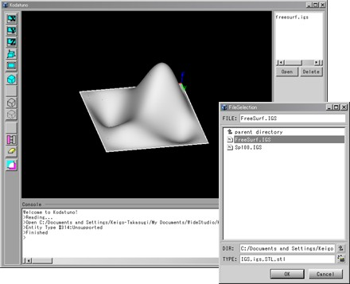
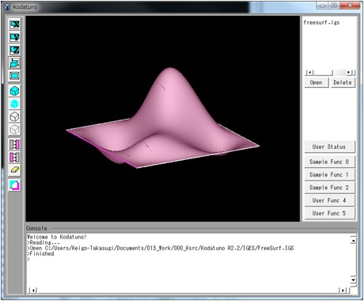
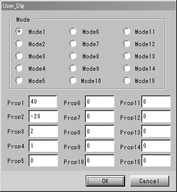
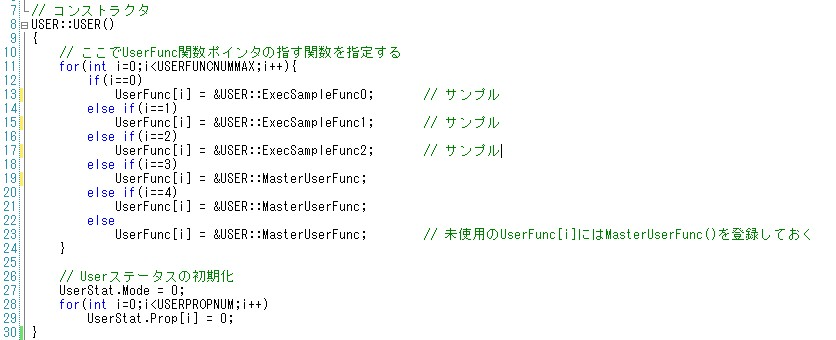
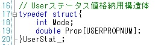
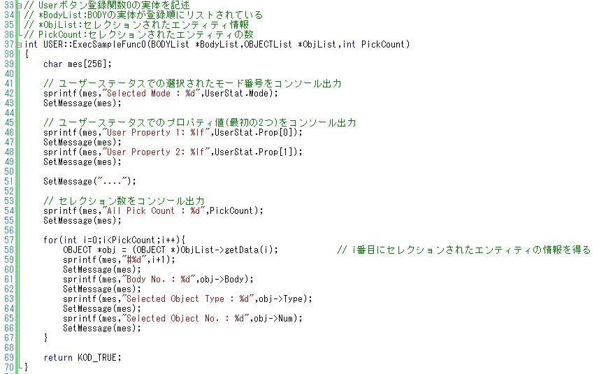
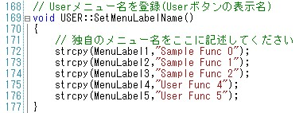

|
|
|
Prev
Index
Next |
サンプルアプリケーションの実行とソース解説 1
Kodatuno CAM Kernelを使ったCAMアプリケーションの実装手順を説明します．
2.3 各ウィンドウの名称と機能で述べたとおり，KodatunonにはKodatunoが提供するライブラリをユーザーが呼び出し， 独自のCAMアプリケーションを構築するための仕組みが用意されています．
"WS"フォルダに"UserFunc.cpp/.h", "SampleFunc1.cpp", "SampleFunc2.cpp", "SampleFunc.h"の5つのソースファイルがあることを確認してください． "UserFunc.cpp/.h"は，KodatunoのGE部/GUI部と，ユーザーが独自に作成するソースコードとのブリッジとしての役割を果たす部分です． また，Kodatuno R2.2 W/S Ver.には8つのサンプルアプリケーションが用意されており，それらが"SampleFunc1.cpp"および"SapmeFunc2.cpp"に記述されています． 本セクションおよび次セクションにてこれら8つのサンプルアプリケーションの解説を行いますが，その前に"UserFunc.cpp/.h"の取り扱いについて説明します．
UserFunc.cpp/.h
"UserFunc.cpp/.h"にはUSERクラスが定義されており，メイン画面に割り当てられたユーザー用ボタンにイベントが発生すると，このクラスを介してKodatuno GUI部とUser部が情報をやりとりします． 具体例として, ピックされたBody情報をコンソールに出力するサンプル関数ExecSampleFunc0()を用意しましたので，これを通してどのような情報がUser部に渡されるかを解説します．＜実行手順＞
- まず、2.2 Kodatunoを動かしてみようで示したように，Kodatunoアプリケーションを起動します．
- 次に適当なIGESファイルを読み込みます．メイン画面右上"Open"ボタンを押し，"Kodatuno_R***"フォルダ内にある， "IGES"フォルダを開くと，"FreeSurf.IGS"という名前のIGESファイルがありますので，それを選択し、"OK"．グラフィック領域に 自由曲面が表示されたことを確認します．
 - "FreeSurf.IGS"は1枚の自由曲面と4本のエッジから成っています．これらを適当にピックします．
 - 次に，ユーザー用ボタンの中から，"User Status"をクリック，User Statusダイアログを表示します．Modeを適当に選択，Prop1, Prop2に適当な数値を入れ，OK．
 - 最後に，ユーザー用ボタンの"Sample Func 0"をクリックすることによって，このボタンに割り当てられた関数が実行されます． ボタンを押すことによって，コンソールに"User Status"情報およびピックされたオブジェクトの情報が出力されたことを確認してください．
＜ソース解説＞
まずUSERクラスのコンストラクタを見てみましょう. ここでUserFunc()という関数ポインタにユーザーが作成した関数を登録します．13行目を見てみると，ExecSampleFunc0()という名の関数を UserFunc()に代入しています. これは，メイン画面ユーザーボタンの"Sample Func 0"に当たる部分に対応します．このように，関数ポインタを介してKodatuno GUI部とUser部がやりとりします．
ExecSampleFunc0()はユーザーが自作する関数であり，その実体は33行目から書かれています。（プロトタイプ宣言も当然必要です．UserFunc.h内に記述されています．）
また，UserFunc()自体は引数が決まっていますので、それに代入するExecSampleFunc0()の引数もUserFunc()に合わせる必要があります．引数は，の3つです．BODYListとOBJECTListはピックしたオブジェクトの実体を取り出すための重要な要素ですが，ここでは概略をおさえるだけにとどめ，2.8 BODYListとOBJECTListでまとめて解説します．
- BODYList *BodyList Kodatunoは読み込んだBodyの幾何情報を読み込んだ数だけ、読み込んだ順にリスト構造として保持します。Bodyの幾何情報は"BODY.h"で定義されており， BODYクラスによって統括されています．*BodyListはリスト化されたBodyへのポインタです．
- OBJECTList *ObjList あるBodyに対して、ある面やエッジ(オブジェクト)をピックした場合、そのピックされたオブジェクトを識別するための情報が必要です。 *ObjListはそのセレクション情報を提供する引数です。
- int PickCount 全部で幾つの面あるいはエッジを選択したかを示します。
また，USERクラス内にUserStat構造体が定義されており，この中に"User Status"ダイアログでの設定情報が格納されています． では，ExecSampleFunc0()を見てみましょう． 先ほども述べたとおり，引数は必ず固定しなければなりません．
コンソールへの文字列出力はSetMessage()関数を使います．42〜49行目では"User Status"ダイアログでの設定情報を取り出し，出力しています． 54行目ではExecSampleFunc0()の引数PickCountを出力しています．57行目以降では，ピックした数分のオブジェクトの情報を出力しています．
i番目にピックされたオブジェクトの情報を取得するには58行目のように記述します．この記述の意味は解説しませんので，はおまじないとして覚えてしまってください． なお，OBJECT構造体は"BODY.h"の194行目に記述されています．以上でExecSampleFunc0()の解説は終わりです．ユーザーが定義した関数の登録方法，ピックした曲面/曲線の幾何情報の取り出し方が理解できたでしょうか．
つづいて，サンプルアプリケーションの解説に入っていきます．
そうそう，ユーザーボタン名を変更する方法を説明するのを忘れていました．ボタン名は"UserFunc.cpp"の169行目，SetMenuLabelName()関数内で記述します． 適当に名前を変更し，変更が反映されることを確認してみましょう．
| Copyright(C) Kodatuno Development Team, 2011 | Last modified: Nov. 11, 2011 |